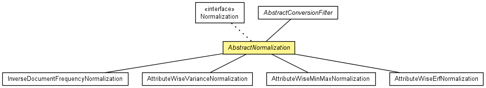

de.lmu.ifi.dbs.elki.datasource.filter
Class AbstractNormalization<O>
java.lang.Object
 de.lmu.ifi.dbs.elki.datasource.filter.AbstractConversionFilter<O,O>
de.lmu.ifi.dbs.elki.datasource.filter.AbstractNormalization<O>
de.lmu.ifi.dbs.elki.datasource.filter.AbstractConversionFilter<O,O>
de.lmu.ifi.dbs.elki.datasource.filter.AbstractNormalization<O>
- Type Parameters:
O - Object type processed
- All Implemented Interfaces:
- Normalization<O>, ObjectFilter, InspectionUtilFrequentlyScanned, Parameterizable
- Direct Known Subclasses:
- AttributeWiseErfNormalization, AttributeWiseMinMaxNormalization, AttributeWiseVarianceNormalization, InverseDocumentFrequencyNormalization
public abstract class AbstractNormalization<O>
- extends AbstractConversionFilter<O,O>
- implements Normalization<O>

Abstract super class for all normalizations.
|
Constructor Summary |
protected |
AbstractNormalization()
Initializes the option handler and the parameter map. |
| Methods inherited from interface de.lmu.ifi.dbs.elki.datasource.filter.ObjectFilter |
filter |
AbstractNormalization
protected AbstractNormalization()
- Initializes the option handler and the parameter map.
convertedType
protected SimpleTypeInformation<? super O> convertedType(SimpleTypeInformation<O> in)
- Description copied from class:
AbstractConversionFilter
- Get the output type from the input type after conversion.
- Specified by:
convertedType in class AbstractConversionFilter<O,O>
- Parameters:
in - input type restriction
- Returns:
- output type restriction
normalizeObjects
public final MultipleObjectsBundle normalizeObjects(MultipleObjectsBundle objects)
- Description copied from interface:
Normalization
- Performs a normalization on a database object bundle.
- Specified by:
normalizeObjects in interface Normalization<O>
- Parameters:
objects - the database objects package
- Returns:
- modified object bundle
transform
public LinearEquationSystem transform(LinearEquationSystem linearEquationSystem)
- Description copied from interface:
Normalization
- Transforms a linear equation system describing linear dependencies
derived on the normalized space into a linear equation system describing
linear dependencies quantitatively adapted to the original space.
- Specified by:
transform in interface Normalization<O>
- Parameters:
linearEquationSystem - the linear equation system to be transformed
- Returns:
- a linear equation system describing linear dependencies
derived on the normalized space transformed into a linear equation system
describing linear dependencies quantitatively adapted to the original space
toString
public String toString()
- Overrides:
toString in class Object